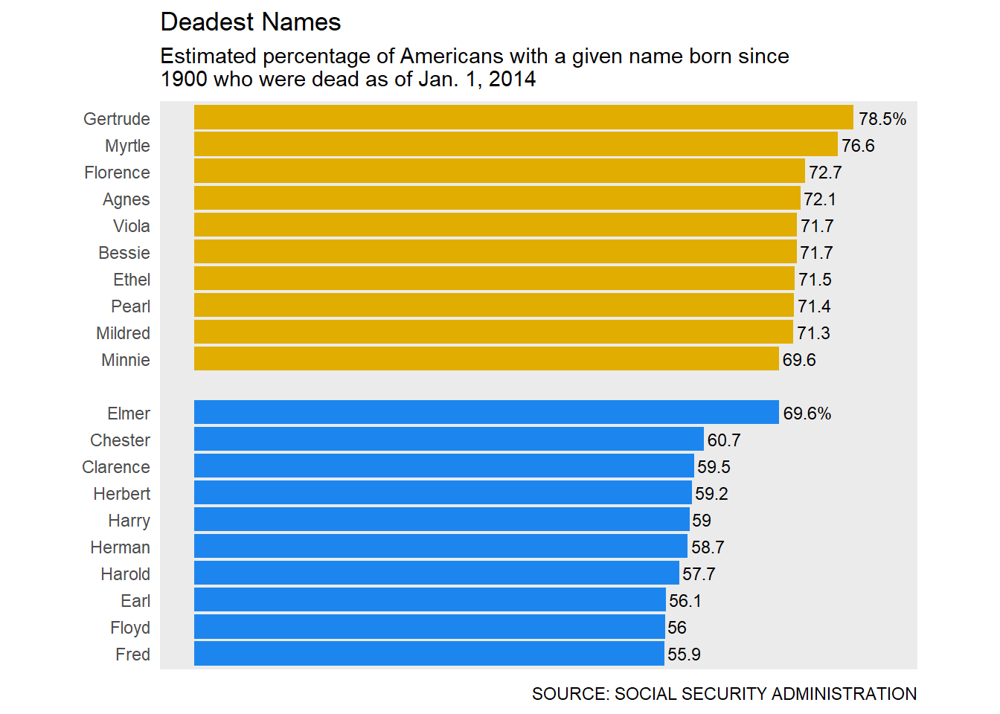

Blog - Data Science
R
Beginner’s Guide: Recreating “Deadest Names” Using ggplot2
(Tuesday, 2019-10-22)
Intro
This is an R lab project from Data Science 1 of the master’s program in biostats and data science at Weill Cornell, taught by Dr. Elizabeth Sweeney. This tutorial is created for beginner R users with basic knowledge of R Studio IDE, data types, and visualization. Please refer to R Documentation if you’re uncertain of any functions. Google search results, particularly StackOverflow, are also your friends.
Goal
In 1.5 hours, we’d like to reproduce one of the plots, Deadest Names, published on FiveThirtyEight. You may find the original prompt here.
Original plot

R Duplicate using ggplot2

Step 1. Data prep
First, we load a library, mdsr, using library(). Remember to install the package using install.packages("mdsr") if the package is not in your R library. You may need to do this installation only once. Do the same to load tidyverse (we’ll use dplyr and ggplot2 mapped in tidyverse). Note that in a code chunk, pond sign # leads a comment line (R will not execute).
We will then assign a data table BabynamesDist from the function make_babynames_dist().
# load R package "mdsr"
library(mdsr)
library(tidyverse)
# Create our data table
BabynamesDist <- make_babynames_dist()Once you load the data, take a look at what it is like. We’ll use glimpse() from the package dplyr and summary() from base R. Pay attention to the data class of each column. How many rows and columns are there?
glimpse(BabynamesDist)## Observations: 1,639,722
## Variables: 9
## $ year <dbl> 1900, 1900, 1900, 1900, 1900, 1900, 1900, 1900...
## $ sex <chr> "F", "F", "F", "F", "F", "F", "F", "F", "F", "...
## $ name <chr> "Mary", "Helen", "Anna", "Margaret", "Ruth", "...
## $ n <int> 16706, 6343, 6114, 5304, 4765, 4096, 3920, 389...
## $ prop <dbl> 0.05257559, 0.01996211, 0.01924142, 0.01669226...
## $ alive_prob <dbl> 0, 0, 0, 0, 0, 0, 0, 0, 0, 0, 0, 0, 0, 0, 0, 0...
## $ count_thousands <dbl> 16.706, 6.343, 6.114, 5.304, 4.765, 4.096, 3.9...
## $ age_today <dbl> 114, 114, 114, 114, 114, 114, 114, 114, 114, 1...
## $ est_alive_today <dbl> 0, 0, 0, 0, 0, 0, 0, 0, 0, 0, 0, 0, 0, 0, 0, 0...summary(BabynamesDist)## year sex name n
## Min. :1900 Length:1639722 Length:1639722 Min. : 5.0
## 1st Qu.:1950 Class :character Class :character 1st Qu.: 7.0
## Median :1980 Mode :character Mode :character Median : 12.0
## Mean :1972 Mean : 193.2
## 3rd Qu.:1998 3rd Qu.: 32.0
## Max. :2010 Max. :99686.0
## prop alive_prob count_thousands age_today
## Min. :2.260e-06 Min. :0.0000 Min. : 0.0050 Min. : 4.00
## 1st Qu.:3.880e-06 1st Qu.:0.8065 1st Qu.: 0.0070 1st Qu.: 16.00
## Median :7.200e-06 Median :0.9678 Median : 0.0120 Median : 34.00
## Mean :1.293e-04 Mean :0.8052 Mean : 0.1932 Mean : 42.01
## 3rd Qu.:2.095e-05 3rd Qu.:0.9891 3rd Qu.: 0.0320 3rd Qu.: 64.00
## Max. :6.062e-02 Max. :0.9943 Max. :99.6860 Max. :114.00
## est_alive_today
## Min. : 0.00
## 1st Qu.: 4.97
## Median : 8.93
## Mean : 150.91
## 3rd Qu.: 24.48
## Max. :80399.05Step 2. Get top 10 names
For females and males respectively.
Now, we will create two subsets of BabynamesDist that contain top 10 names for females and males respectively. We’ll use pipe operators to generate the two tables. A good practice is to use -> names_fem_10 at the end of the pipe, but for now, we’ll do it the traditional way.
filter(sex == "F")- select only females;
group_by(name)- grouped by name (consider this as a temporary holder for many name groups);
summarise(..)- based on each name group, create 2 columns that summarise each group data;
filter(N >= 100000)- select only names with more than 100,000 observations;
arrange(desc(est_percent_dead))- order the data by the columnest_percent_dead, high to low;
head(10)- select the first 10 names;
mutate(sex = "Female")- create a new column indicating the sex.
# For females
names_fem_10 <- BabynamesDist %>%
filter(sex == "F") %>%
group_by(name) %>%
summarise(N = sum(n),
est_percent_dead = 1 - sum(est_alive_today) / N) %>%
filter(N >= 100000) %>%
arrange(desc(est_percent_dead)) %>%
head(10) %>%
mutate(sex = "Female")The top 10 female names, and their respective number of observations, and estimated percentage of death are as follows. They don’t look exactly like that of the original post, but are pretty similar, so we’ll just comply!
names_fem_10## # A tibble: 10 x 4
## name N est_percent_dead sex
## <chr> <int> <dbl> <chr>
## 1 Gertrude 145703 0.785 Female
## 2 Myrtle 108943 0.766 Female
## 3 Florence 284953 0.727 Female
## 4 Agnes 134943 0.721 Female
## 5 Viola 116676 0.717 Female
## 6 Bessie 130155 0.717 Female
## 7 Ethel 232249 0.715 Female
## 8 Pearl 123063 0.714 Female
## 9 Mildred 433359 0.713 Female
## 10 Minnie 112045 0.696 FemaleSimilarly, we’ll create a table for males.
# For males
names_male_10 <- BabynamesDist %>%
filter(sex == "M") %>%
group_by(name) %>%
summarise(N = sum(n),
est_percent_dead = 1 - sum(est_alive_today) / N) %>%
filter(N >= 100000) %>%
arrange(desc(est_percent_dead)) %>%
head(10) %>%
mutate(sex = "Male")Now have a look at these male names:
names_male_10## # A tibble: 10 x 4
## name N est_percent_dead sex
## <chr> <int> <dbl> <chr>
## 1 Elmer 116855 0.696 Male
## 2 Chester 114384 0.607 Male
## 3 Clarence 280530 0.595 Male
## 4 Herbert 217299 0.592 Male
## 5 Harry 374544 0.590 Male
## 6 Herman 127031 0.587 Male
## 7 Harold 538675 0.577 Male
## 8 Earl 274590 0.561 Male
## 9 Floyd 146686 0.560 Male
## 10 Fred 312274 0.559 MaleStep 3. Merge tables
Now we’ll merge the female and male table, and modify the data a little bit to better cater to reproduce the plot. We’ll use rbind() function to combine the two tables by row; i.e., the new table contains the female table as the first 10 rows, and the male table as the next 10 rows.
Sometimes ggplot2 orders our data in a strange way; to avoid this, we will lock the order of our data using factor().
# Merge two tables
names_top_20 <- rbind(names_fem_10, names_male_10)
## Lock the factor order of names
names_top_20$name <- factor(names_top_20$name, levels = rev(names_top_20$name))Since the original plot is showing the percentage, not the probability, we will multiply our percentage column by \(100\) and then round to 1 decimal point. Also, only the first name in each gender group has a percentage sign “%” attached to the number, and we will create a label column accordingly, too.
# Create a percent label
names_top_20 <- names_top_20 %>%
mutate(label = round(est_percent_dead * 100, 1))
## Add "%" sign
for (i in c(1,11)){
names_top_20[i,"label"] <- paste(names_top_20[i,"label"], "%", sep = "")
}Now have a look at the final data table, and we’re ready to go! Note that interestingly, the percentage of the least deadest name of females is slightly higher than the percentage of the most deadest name of males. As a result, we have a natural ordered list of names by females and then by males.
names_top_20## # A tibble: 20 x 5
## name N est_percent_dead sex label
## <fct> <int> <dbl> <chr> <chr>
## 1 Gertrude 145703 0.785 Female 78.5%
## 2 Myrtle 108943 0.766 Female 76.6
## 3 Florence 284953 0.727 Female 72.7
## 4 Agnes 134943 0.721 Female 72.1
## 5 Viola 116676 0.717 Female 71.7
## 6 Bessie 130155 0.717 Female 71.7
## 7 Ethel 232249 0.715 Female 71.5
## 8 Pearl 123063 0.714 Female 71.4
## 9 Mildred 433359 0.713 Female 71.3
## 10 Minnie 112045 0.696 Female 69.6
## 11 Elmer 116855 0.696 Male 69.6%
## 12 Chester 114384 0.607 Male 60.7
## 13 Clarence 280530 0.595 Male 59.5
## 14 Herbert 217299 0.592 Male 59.2
## 15 Harry 374544 0.590 Male 59
## 16 Herman 127031 0.587 Male 58.7
## 17 Harold 538675 0.577 Male 57.7
## 18 Earl 274590 0.561 Male 56.1
## 19 Floyd 146686 0.560 Male 56
## 20 Fred 312274 0.559 Male 55.9Step 4. The fun part!
Although I put comments in the code chunk, I’d like to illustrate a little bit further on a few “tricks” to make our ggplot as close to the original plot as possible.
geom_text(): we use this function to add labels to the end of each colored bar. We setaes()to applylabelcolumn from our data table as our labels.vjust()andhjustadjust the positions of the labels vertically and horizontally, respectively. Finally,sizesets the font size of our labels. You may need to adjust these values to tailor to the desired effects.scale_y_continuous(limits = c(0, 0.82)): here we expand the range of y-axis (which is x-axis after flipping the coordinates) because the default range does not have enough space for our top label (“%” will be omitted). We usey_continuousbecauseest_percent_deadis a continuous variable. Here you may also adjust the maximum value of the range (now it’s 0.82) to tailor your needs.scale_x_discrete(limits = ...): the original post has an empty bar between female and male names; here we use thescale_x_discretefunction to do the trick. Note that an empty space, " ", is inserted between two name groups. We usediscreteinstead ofcontinuousbecausenameis a discrete variable.- In
theme, we useaspect.ratioto make our plot narrower. - In
labs, we usecaptionto add small notations to the lower right corner of the plot. coord_flip: after everything we’ve done, we finalize the plot using this function to flip the x-axis and y-axis.
(ggplot(data = names_top_20, ## use the data we just created for plotting
aes(x = name,
y = est_percent_dead,
fill = sex)) + ## color the plot by sex
geom_col() + ## we're making a bar plot
geom_text(aes(label = label), ## Add labels to each bar using our label column
vjust = 0.5, ## Adjust the position of labels so they are at the end of each bar
hjust = -0.1,
size = 3) +
scale_fill_manual(values = c('#e1ad01','#1C86EE')) + ## fill the bars using matching colors
scale_y_continuous(limits = c(0, 0.82)) + ## expand the background panel vertically
scale_x_discrete(limits = c(levels(names_top_20$name)[1:10],
" ", ## create the empty line
levels(names_top_20$name)[11:20])) +
theme(aspect.ratio = 0.75, ## set the height:width ratio as close as to the original plot
legend.position = "none", ## remove any element that's not on the original plot
panel.grid = element_blank(),
axis.text.x = element_blank(),
axis.ticks.x = element_blank(),
axis.ticks.y = element_blank()) +
labs(title = "Deadest Names",
subtitle = "Estimated percentage of Americans with a given name born since\n1900 who were dead as of Jan. 1, 2014", ## label the plot with two lines
caption = "SOURCE: SOCIAL SECURITY ADMINISTRATION") + ## label at the caption position
xlab(NULL) +
ylab(NULL) +
coord_flip() -> p) ## flip coordinates, and assign the plot to p
Voila!
Blog - English Learning
美国人都会的2000词
- \(Title\): 2000 Words that Every American Knows
Course archive
- \(Year\): 2017 - 2018
- \(Length\): 33 lectures
- \(Duration\): 70 min/ecture
美音开口练
- \(Title\): American Accent Training
Course archive
- \(Year\): 2016 - 2018
- \(Length\): 24 lectures
- \(Duration\): 55 min/ecture
TOEFL口语话题王
- \(Title\): TOEFL Speaking and Logical Thinking
Course archive
- \(Year\): 2018
- \(Series\): 3
- \(Length\): 35 lectures
- \(Duration\): 55 min/lecture
常用短语句型听力初级
- \(Title\): Common Words and Phrases, Listening Practices - Level 1
Course archive
- \(Time\): 2016-01-17 to 2016-11-13
- \(Length\): 40 lectures
- \(Duration\): 55 min/lecture